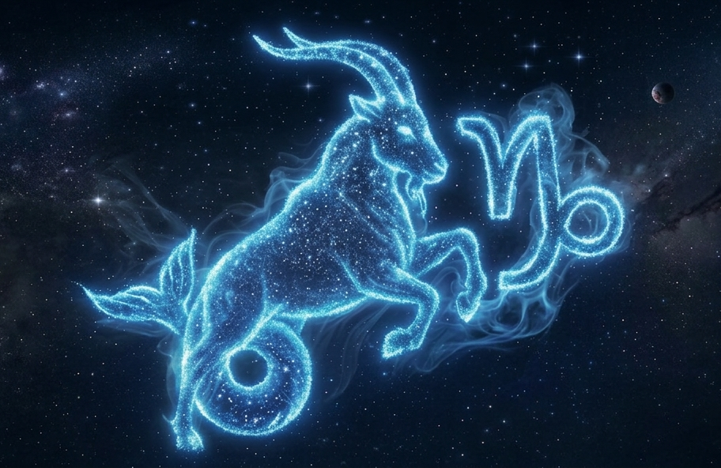

Capricórnio

O signo de Capricórnio é o décimo do zodíaco e está associado à disciplina, responsabilidade e ambição.
Regido pelo planeta Saturno, Capricórnio tem forte ligação com o trabalho, a persistência e a construção de objetivos a longo prazo.
Pessoas capricornianas costumam ser organizadas, determinadas e muito focadas, sempre buscando estabilidade e sucesso através do esforço.
Valorizam responsabilidade e comprometimento. Por outro lado, podem ser mais rígidas, sérias e exigentes consigo mesmas e com os outros.
Capricórnio é um signo de elemento terra, o que reforça seu lado prático, realista e confiável. Em resumo, capricornianos são conhecidos por sua dedicação, disciplina e capacidade de alcançar grandes conquistas.